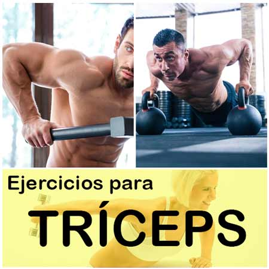

Welcome to Ejercicios efectivos de tríceps
Los siete mejores ejercicios para trabajar tus tríceps
2021.06.26 19:32Webedia Vitónica Menú Nuevo ENTRENAMIENTO Y FITNESS NUTRICIÓN Y DIETAS SALUD RUNNING EQUIPAMIENTO Instagram Facebook Youtube Flipboard
Los siete mejores ejercicios para trabajar tus tríceps
Sin comentarios HOY SE HABLA DE Smartwatch Menú Dieta NikeSuscríbete a Vitónica
Síguenos Twitter Facebook Youtube Instagram Flipboard 08 marzo 2021, 16:24 Víctor Falcón @victoorEl tríceps es el músculo más grande de tu brazo y el desarrollo de este hará que tus brazos luzcan grandes y musculosos o no.
Un error que la mayoría de nosotros hemos cometido alguna vez es centrar el entrenamiento del brazo en el bíceps dejando el segundo plano el trabajo del tríceps. Aunque no lo creas, este último, es responsable del 60% del volumen total de tus brazos y por ellos es más importante trabajarlo correctamente.
A continuación vamos a ver siete ejercicios clave para desarrollar este músculo y conseguir buenos resultados.
Fondos de tríceps
Este es mi ejercicio favorito a la hora de trabajar los brazos. Es un ejercicio que tiene gran transferencia en cuanto a fuerza y con el que fácilmente podremos lastrarnos y aumentar así el peso que movemos y, por tanto, la intensidad del ejercicio. Podemos hacerlo entre dos bancos, entre dos sillas en casa o, la mejor opción, entre barras paralelas.
Un error muy común es no hacer el rango completo del movimiento y no bajar del todo. En este caso, si no puedes hacer el rango completo, es mejor bajar el peso empleado o usar una goma elástica de ayuda.
BESPORTBLE 2 Piezas de Barras de Pesas Accesorios de Levantamiento de Pesas para Pesas de Gimnasio Barras de Pesas (Color Aleatorio)
Hoy en Amazon por 21,87€Extensión de codos sentado
Sentados en un banco con una mancuerna o una barra debemos extender los brazos por encima de nuestra cabeza y flexionarlos de forma controlada hacía atrás hasta que estos formen un ángulo cercano a los 90º. Luego volvemos a extenderlos por completo y esto será una repetición.
Este ejercicio en concreto nos permite trabajar el tríceps de forma muy aislada y las sensaciones de bombeo son bastante notables.
Extensión a una mano con mancuerna
Muy similar al ejercicio anterior, pero en este caso trabajamos de forma aislada cada uno de los brazos y de esta forma podemos solucionar pequeños desequilibrios en cuanto a fuerza o desarrollo muscular . Personalmente me gusta meter este ejercicio, de forma ocasional, al final del entrenamiento.
C.P. Sports Discos de pesas para barra, olímpicos, 50 mm, goma, 5 mm, para pesas de 5, 10, 15, 20 kg, 5 kg - Paar
Hoy en Amazon por 59,99€Patada horizontal de tríceps en polea
Este ejercicio es de los que más activación provocan en el tríceps y es algo que se nota en cada repetición que hacemos. Nos colocamos mirando a una polea, con esta situada a una altura baja e inclinamos nuestro cuerpo hasta que la espalda quede prácticamente paralela al suelo. A partir de aquí debemos de coger la polea con una de nuestras manos y llevar el brazo de una posición de 90º a una extensión completa paralela al suelo.
Tríceps en polea superior con barra
Es de los más típicos y habituales en los gimnasio y aun así es un gran ejercicio para trabajar los tríceps. Una buena opción es utilizarlo en alguna superserie en combinación con otro ejercicio de tríceps e incluso con alguno de bíceps y así obtener mejores resultados.
Tríceps en polea superior con cuerda
Personalmente me gusta mucho realizar este ejercicio tanto con ambos brazos como de forma aislada trabajando cada brazo por separado. La sensación de trabajo y activación del tríceps es muy buena y me gusta sentir la contracción de este en cada repetición. En este caso es importante estirar los brazos del todo quedando estos al costado de nuestras caderas y así aprovechar el rango extra de movimiento que nos aporta la cuerda.
Press Francés
Otro ejercicio que nos permitirá ganar algo de fuerza además de hipertrofia en el tríceps. Gracias a la barra podemos añadir kilos y así ir ganando fuerza y progresando. Es importante en este caso extender los brazos por completo al final del movimiento y bajar la barra lo suficiente para que nuestros brazos se flexionen por completo y así trabajar el rango completo del movimiento. Recuerda, es mejor usar un peso bajo y hacer el rango completo que subir el peso perjudicando el rango de movimiento.
Imágenes | John Fornander
Vídeos | Power Explosive , MultiMusculo , Rodrigo Bermejo , Marc Rivero Vila , MiGimnasioTv , PortalFitness y Roberto Eusebio
En Vitónica | Cómo evitar balanceos y giros peligrosos a la hora de trabajar bíceps y tríceps
Vitónica en Instagram
Seguir
Compartir Los siete mejores ejercicios para trabajar tus tríceps
Facebook Twitter Flipboard E-mail Temas Entrenamiento BrazosCompartir
Facebook Twitter Flipboard E-mail Comentarios cerrados Temas de interés quinoa crossfit fitbit pilates ejercicios yoga adelgazar andando ayuno intermitente tofu adelgazar sin dieta pastillas adelgazar mercadona dieta keto dieta disociada comida a domicilio Inicio Lesiones Dietas Recetas Saludables Musculación Entrenamiento Alimentos Yoga Abdominales Rutinas Suplementos HIIT CardioVer más temas
Síguenos Twitter Facebook Youtube Instagram Flipboard E-mail Vitónica TV Lo mejor Equipo editorial Contacta con nosotrosMás sitios que te gustarán
Xataka Trendencias Poprosa EspinofExplora en nuestros medios
Tecnología Móviles, tablets, aplicaciones, videojuegos, fotografía, domótica Xataka Xataka Móvil Xataka Foto Xataka Android Xataka Smart Home Xataka Windows Xataka Ciencia Applesfera Genbeta Magnet Mundo Xiaomi Videojuegos Consolas, juegos, PC, PS4, Switch, Nintendo 3DS y Xbox 3DJuegos Vida Extra IGN Millenium Entretenimiento Series, cine, estrenos en cartelera, premios, rodajes, nuevas películas, televisión Sensacine Espinof Gastronomía Recetas, recetas de cocina fácil, pinchos, tapas, postres Directo al Paladar Estilo de vida Moda, belleza, estilo, salud, fitness, familia, gastronomía, decoración, famosos Vitónica Trendencias Trendencias Hombre Decoesfera Compradiccion Poprosa Latinoamérica Publicaciones de México Xataka México Directo al Paladar México Sensacine México 3DJuegos México Aviso legal Condiciones de uso Condiciones de uso de cookies Publicidad InicioReciente
Los mejores deportes para hacer con niños al aire libre Pasar mucho tiempo sentado acelera el envejecimiento considerablemente Menú de batch cooking fresco y sano para resolver fácilmente tus comidas en verano Escarpines con los que disfrutar de deportes y actividades acuáticas este verano Siete sujetadores deportivos con distintos niveles de sujeción que fichamos en las rebajas de Nike Nike inicia sus rebajas: zapatillas de running, zapatillas de entrenamiento y ropa deportiva con grandes descuentos Los cinco mejores consejos para nadadores principiantes ¿Calidad o cantidad? Qué tiene más importancia en una dieta para adelgazar 13 recetas de gazpacho alejadas del tradicional, saludables y sorprendentes Peso muerto convencional, sumo, piernas rígidas y rumano: ¿cuáles son sus diferencias? 19 prendas de ropa y accesorios para jugar a pádel que puedes encontrar en Decathlon Si estás buscando un GPS para tus aventuras en bici echa un vistazo a este Garmin por menos de 200 euros en Decathlon Guía para principiantes (X): Flexiones de brazos en suelo Rebajas de hasta el 50% en Adidas: zapatillas, camisetas y pantalones al mejor precio Cinco consejos para prevenir un golpe de calor Los 11 pescados más saciantes para la dieta por su alto contenido proteico En qué fijarnos al leer las etiquetas nutricionales de los gazpachos y salmorejos de supermercado para elegir el más saludable El equipamiento con el que ir preparado a tu próxima acampada o ruta de senderismo 11 sopas y cremas frías saludables, aptas para perder peso con una dieta keto o cetogénica Todo lo que debes saber para realizar la flexión de brazos perfecta, sacar el máximo provecho y evitar lesionesVer más artículos
Vitónica TV
El desayuno NO es la comida más importante del día Xiaomi Mi Smart Band 6: tan RECOMENDABLE e IMPERFECTA como siempre Xiaomi Mi Watch Lite, análisis: PERFECTO PARA SER TU PRIMER SMARTWATCHVer más vídeos
Síguenos Twitter Facebook Youtube Instagram FlipboardEn Vitónica hablamos de
Lesiones Dietas Recetas Saludables Musculación Entrenamiento Alimentos Yoga Abdominales Rutinas Suplementos HIIT CardioVer más temas
SubirWebedia
Tecnología
Xataka Xataka Móvil Xataka Foto Xataka Android Xataka Smart Home Xataka Windows Xataka Ciencia Applesfera Genbeta Magnet Mundo XiaomiVideojuegos
3DJuegos Vida Extra IGN MilleniumEntretenimiento
Sensacine EspinofGastronomía
Directo al PaladarEstilo de vida
Vitónica Trendencias Trendencias Hombre Decoesfera Compradiccion PoprosaLatinoamérica
Xataka México 3DJuegos México Sensacine México Directo al Paladar México Webedia Xataka Vida Extra Espinof Genbeta Directo al Paladar Xataka Ciencia Trendencias Applesfera Xataka Móvil Decoesfera Vitónica Xataka Foto Trendencias Hombre Xataka Android Xataka Smart Home Xataka Windows Magnet Compradiccion 3DJuegos Sensacine IGN Millenium Poprosa Mundo XiaomiTecnología
Xataka Xataka Móvil Xataka Foto Xataka Android Xataka Smart Home Xataka Windows Xataka Ciencia Applesfera Genbeta Magnet Mundo XiaomiVideojuegos
3DJuegos Vida Extra IGN MilleniumEntretenimiento
Sensacine EspinofGastronomía
Directo al PaladarEstilo de vida
Vitónica Trendencias Trendencias Hombre Decoesfera Compradiccion Poprosa